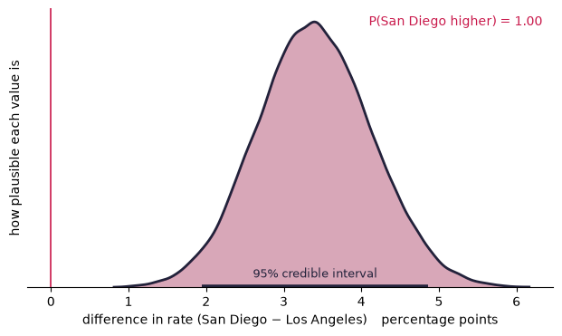
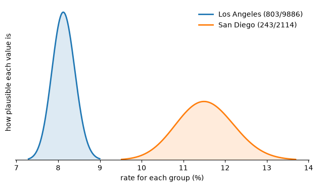
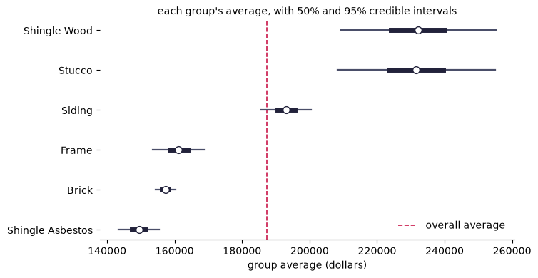

Quickstart¶
Every analysis in bayesplain returns the same object with the same methods,
so what you learn here works for all seven.
import bayesplain as bp
bp.__version__
'0.0.0'
One analysis, both frameworks¶
Two counties’ rates of alcohol involvement in traffic collisions, from the bundled data.
df = bp.datasets.load_collisions()
counts = df.groupby("county").alcohol_involved.agg(["sum", "size"])
counts
| sum | size | |
|---|---|---|
| county | ||
| Los Angeles | 803 | 9886 |
| San Diego | 243 | 2114 |
res = bp.compare_proportions(
successes=counts["sum"].to_numpy(),
n=counts["size"].to_numpy(),
labels=list(counts.index),
)
print(res.summary())
==========================================================================
difference in rate (San Diego − Los Angeles)
==========================================================================
BAYESIAN — what the data say about the quantity itself
most likely value 3.4 percentage points
95% credible interval 1.9 to 4.9 percentage points (HDI)
P(San Diego higher) 1.000
Read: San Diego is higher than Los Angeles with 100% probability; the
gap is most likely 3.4 percentage points, and the data are
consistent with anything from 1.9 to 4.9 percentage points (95%
credible interval).
FREQUENTIST — two-proportion z-test (equivalently chi-square, 1 df)
chi-square (1 df) 24.89
p-value 6.069e-07 (significant at 0.05)
95% confidence interval 1.9 to 4.8 percentage points (Wald)
Read: If the two rates were identical, data at least this extreme would
turn up less than once in a million studies.
--------------------------------------------------------------------
How they line up
Both point the same way here, so the choice between them is not
about the conclusion but about what you can say. 'Significant'
licenses a claim about the data; the posterior licenses a claim
about the size of the effect, which is what a recommendation
actually needs.
--------------------------------------------------------------------------
assumption prior: uninformed — Beta(1, 1)
precision 100,000 independent draws; Monte Carlo error on the mean
is ±2.4e-05. These are exact samples, not a Markov chain.
next .probability('>', x) .decide(rope=(lo, hi)) .sensitivity()
==========================================================================
The posterior comes first because it is what a recommendation is written from. The conventional test comes second because you will meet it in every report you read, and because seeing both is the only reliable way to learn what each one actually claims.
Asking a question the p-value cannot answer¶
res.probability(">", 0.02) # P(the gap exceeds 2 percentage points)
0.97199
print(res.decide(rope=(-0.01, 0.01)))
PRACTICALLY DIFFERENT — the whole 95% credible interval sits outside the
range you called too small to act on (−1.0 to 1.0
percentage points), so the difference is both real
and big enough to matter
A “ROPE” is a region of practical equivalence: a range you decided in advance is too small to act on. Comparing the credible interval against it replaces “reject the null” with a rule that refers to consequences.
The memo sentence¶
res.sentence()
'San Diego is higher than Los Angeles with 100% probability; the gap is most likely 3.4 percentage points, and the data are consistent with anything from 1.9 to 4.9 percentage points (95% credible interval).'
Have students write this themselves before revealing the method. Otherwise the convenience quietly becomes the learning objective.
Translating between frameworks¶
print(res.translate())
THE QUANTITY: difference in rate (San Diego − Los Angeles)
What the posterior says
Given this data and the stated prior, there is a 95% probability the
value lies in the range 1.9 to 4.9 percentage points, and a 100%
probability it is greater than zero. Both are statements about the
quantity itself.
What the two-proportion z-test (equivalently chi-square, 1 df) says
If the two rates were identical, data at least this extreme would turn
up less than once in a million studies.
It is not the probability that the null is true, not the probability
this finding is wrong, and it says nothing about how large the effect
is. p = 6.1e-07 is a statement about data given a hypothesis, not about
a hypothesis given data.
Across many repetitions of this study, 95% of intervals built this way
would contain the true value. It does not say there is a 95% chance the
true value lies in the range 1.9 to 4.8 percentage points — that
sentence is only available for a credible interval.
How they line up
Both point the same way here, so the choice between them is not
about the conclusion but about what you can say. 'Significant'
licenses a claim about the data; the posterior licenses a claim
about the size of the effect, which is what a recommendation
actually needs.
How much does the prior matter?¶
print(res.sensitivity())
HOW MUCH DOES THE PRIOR MATTER?
quantity: difference in rate (San Diego − Los Angeles)
interval in percentage points
prior 95% interval P(dir) BF10
--------------------------------------------------------------------------
uninformed — Beta(1, 1) 1.9 to 4.9 1.000 2.11e+03
jeffreys — Beta(0.5, 0.5) 1.9 to 4.8 1.000 2.17e+03
gentle — Beta(2, 2) 2.0 to 4.9 1.000 1.21e+03
skeptical — Beta(10, 10) 2.2 to 5.1 1.000 1.45
Verdict: the estimate barely moves. The direction probability shifts by
less than 0.05 across every assumption tried and the interval
width by less than 1%, so this conclusion is driven by the data.
Report it, and note that you checked.
But note: the Bayes factor is a different story: it moves by a factor of
1497 over the same priors, while the interval hardly budged.
That gap is not a bug in either number — it is why this package
leads with the estimate. Locating a value is a question the data
can mostly answer on its own; grading the evidence for one model
against another cannot be separated from what you assumed the
alternative looked like.
Notice what this usually shows: the credible interval barely moves across every prior, while the Bayes factor moves a great deal. They are answering different questions, and that asymmetry is why this package leads with the estimate.
Seeing it¶
res.plot();

res.plot(kind="components");

The second plot is the one that explains where a difference came from.
res.plot_kinds()
['posterior', 'prior_posterior', 'components']
The Bayes factor, when someone asks¶
print(res.bayes_factor())
BF10 = 2.11e+03 (extreme evidence for a difference)
BF01 = 0.000475
Compares 'the two groups have different rates' against 'they have the same rate', under a flat Dirichlet prior over the 2x2 table. Prior-sensitive; run .sensitivity() before quoting it.
Deliberately a method call rather than part of the summary.
The other six analyses¶
parcels = bp.datasets.load_parcels()
rowhouses = parcels.loc[parcels.rowhouse, "assessed_value"]
detached = parcels.loc[~parcels.rowhouse, "assessed_value"]
means = bp.compare_means(
rowhouses, detached,
labels=["rowhouse", "detached"], unit="dollars",
)
means.sentence()
'detached is higher than rowhouse with 100% probability; the gap is most likely 9362.39 dollars, and the data are consistent with anything from 3051.65 to 15752.44 dollars (95% credible interval).'
groups = {
name: sub.assessed_value.to_numpy()
for name, sub in parcels.groupby("construction")
}
res_groups = bp.compare_groups(groups, unit="dollars", pool=True)
print(res_groups.pairwise(only=[("Stucco", "Brick"), ("Frame", "Brick")]))
PAIRWISE COMPARISONS (partially pooled)
comparison difference 95% interval P(1st>2nd)
----------------------------------------------------------------------------
Stucco − Brick 74275.96 50774.92 to 97925.59 1.000
Frame − Brick 3940.42 -4289.47 to 12177.94 0.826
comparison BF10 (JZS) verdict
----------------------------------------------------------------------------
Stucco − Brick 93470477.31 favours a difference
Frame − Brick 0.06 favours no difference
Note: Every row is an estimate, not a test, so no multiple-comparisons
correction is applied or needed. Describing several groups does not
make the description of any one of them less accurate. If you are
worried that a small group looks extreme by chance, the fix is
pool=True, not a correction.
res_groups.plot(kind="forest");

import pandas as pd
table = pd.crosstab(parcels.construction, parcels.condition)
print(bp.contingency(table).summary())
==========================================================================
strength of association (Cramér's V) between rows and columns
==========================================================================
BAYESIAN — what the data say about the quantity itself
most likely value 0.078
95% credible interval 0.064 to 0.092 (HDI)
P(above 0.100) 0.002
Read: The association strength is most likely 0.078, and the data are
consistent with anything from 0.064 to 0.092 (95% credible
interval).
FREQUENTIST — Pearson chi-square test of independence
chi-square (15 df) 123.9
p-value 3.337e-19 (significant at 0.05)
Read: If rows and columns were unrelated, data at least this extreme
would turn up less than once in a million studies.
--------------------------------------------------------------------
How they line up
Both point the same way here, so the choice between them is not
about the conclusion but about what you can say. 'Significant'
licenses a claim about the data; the posterior licenses a claim
about the size of the effect, which is what a recommendation
actually needs.
--------------------------------------------------------------------------
assumption prior: uninformed — Dirichlet(1)
precision 100,000 independent draws; Monte Carlo error on the mean
is ±2.3e-05. These are exact samples, not a Markov chain.
note Cramér's V cannot be negative, so P(above 0.1) is measured
against a conventional 'small association' bar rather than a
null. Set threshold= to a value that matters for your
decision instead.
next .probability('>', x) .decide(rope=(lo, hi)) .sensitivity()
==========================================================================
tracts = bp.datasets.load_tracts().dropna(subset=["median_income", "median_rent"])
corr = bp.correlation(
tracts.median_income, tracts.median_rent,
labels=["median income", "median rent"], aggregated=True,
)
corr.sentence()
'The correlation is most likely 0.781, and the data are consistent with anything from 0.765 to 0.796 (95% credible interval).'
Reproducibility in a classroom¶
The seed is fixed by default, so every student sees identical digits:
bp.get_seed(), bp.get_draws()
(12345, 100000)
Having hidden that noise, the package surfaces it — every sampled quantity
prints its Monte Carlo standard error. Use bp.set_seed(None) to show a class
that the wobble is real.